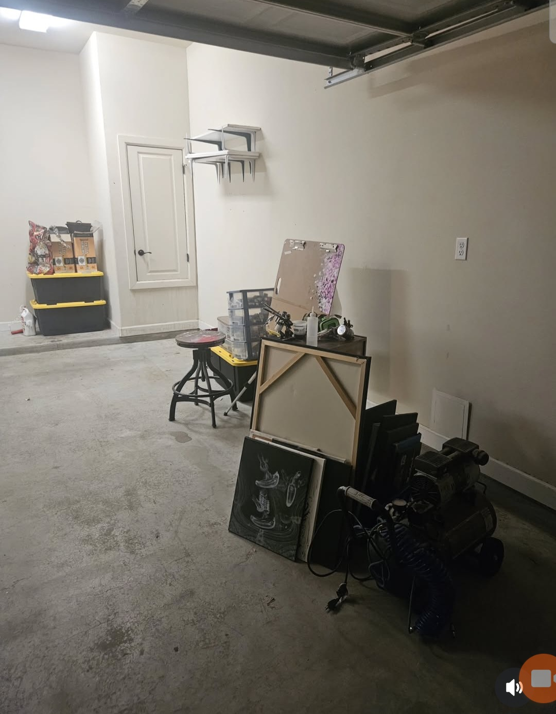
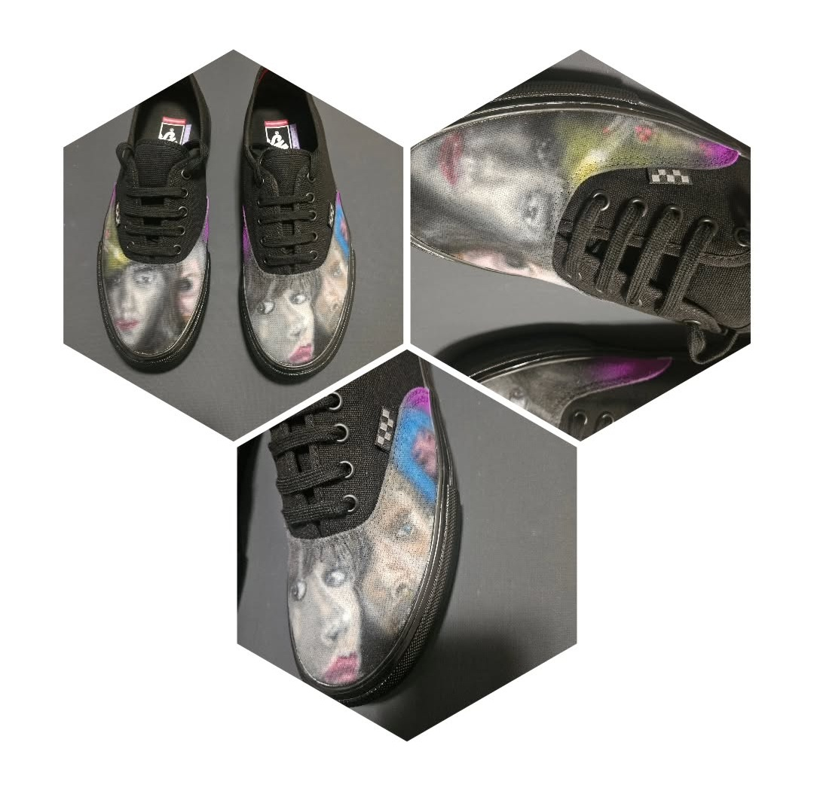
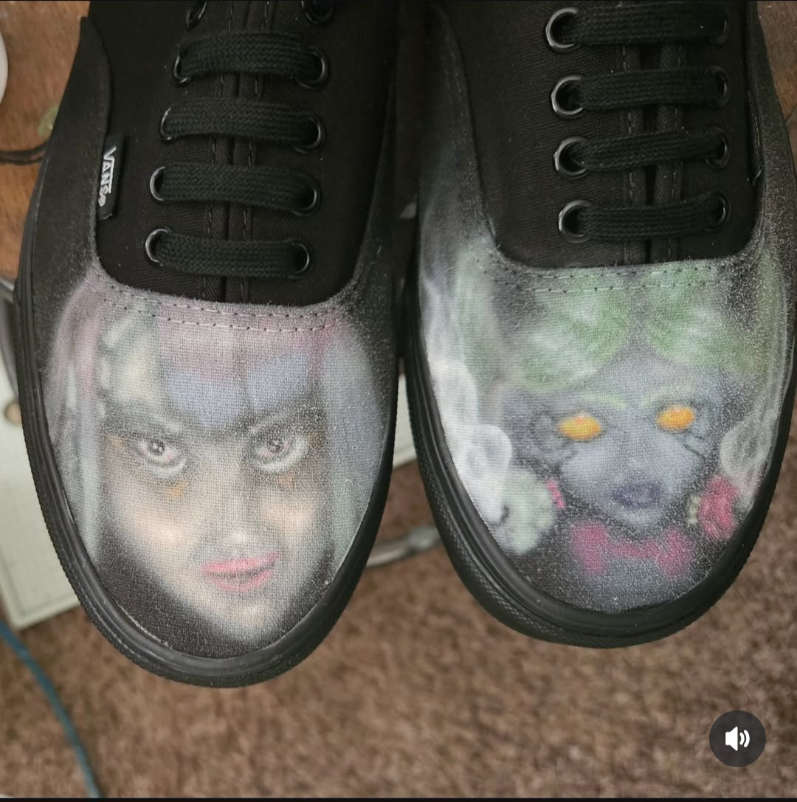
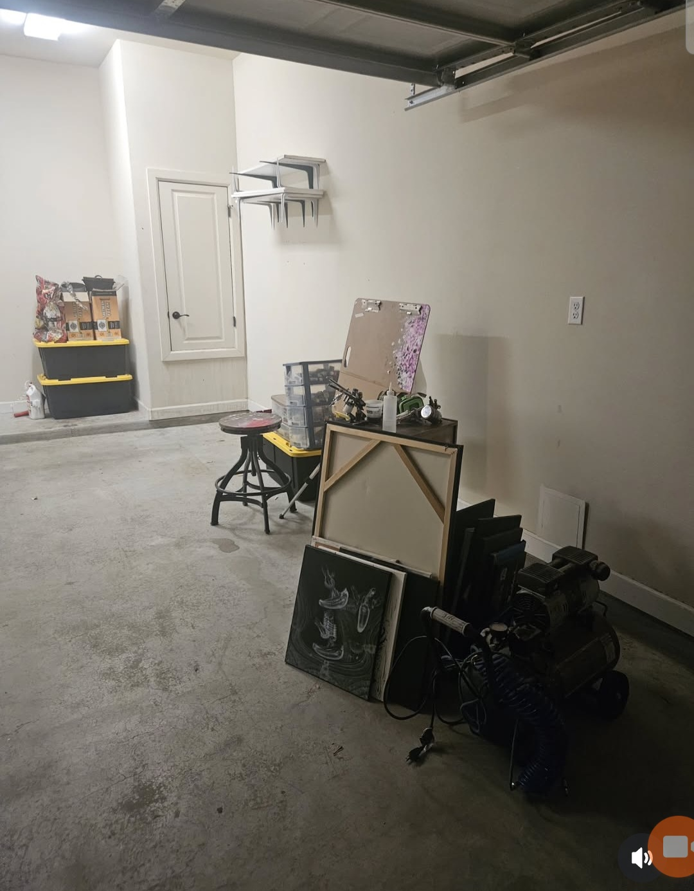
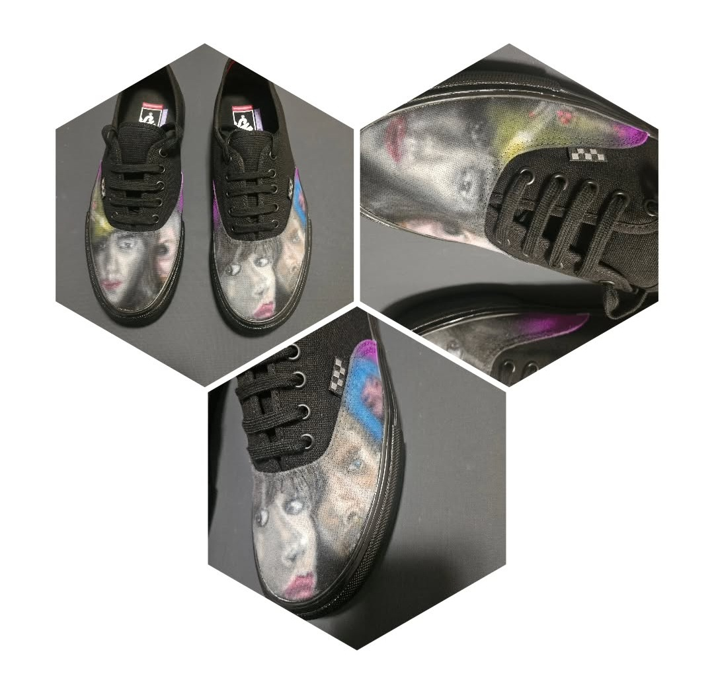
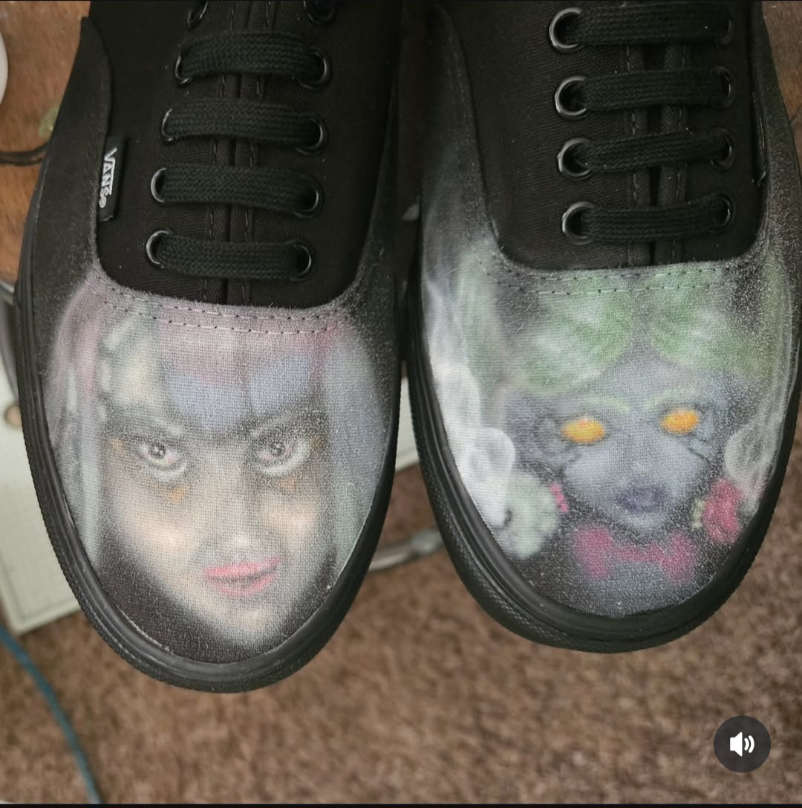

h3x-punk dark dy5t0p1a
x1can0 art Gall3ry
 





The Hexagon and Three Dots
The hexagon used in the alias "h3x-punk" gives homage to my predecessors from a time where ready-to-go hacking tools were non-existent. They broke codes with bare-bone hexadecimal.
The three dots in Xicano culture represent the three ending points of the crazy life experienced growing up in the streets of the Lower Valley side of El Paso: prison, hospital, cemetery. Not all dots have a checkpoint saved, nor the chance for a new playthrough.
Inspiration: Roots, Darkness and Cyberpunk Dystopia
Shadow Canvas merges the rebellious spirit of cyberpunk with the raw energy of psychobilly and goth aesthetic mixed with Xicano culture's colorful palette, creating a dark, neon, and colorful aesthetic sanctuary for artists who refuse to conform. This gallery celebrates the intersection of digital dystopia, Xicanismo, and vintage underground culture, where neon bleeds into shadow and ancient imagery collides with futuristic chaos.
Rooted in the vibrant El Paso art scene, we draw inspiration from the border's unique cultural fusion of pre-Columbian indigenous roots, street art, and a strong underground goth community, providing the perfect recipe for exploring themes of identity, resistance, and transformation in the digital age.
El Paso Artists Who Inspire Us
- Lupe Casillas-Lowenberg - Muralist and art educator brought cultural narratives to public spaces
- Francella Baca - Self-taught contemporary artist exploring identity, indigenous roots, and border culture
- Babak Tavakoli - Visual artist pushing boundaries with mixed media and bold concepts